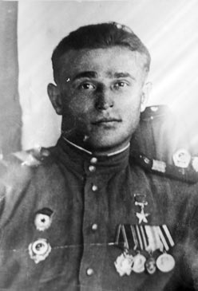

|
ГЕРОЙ ЗЕМЛИ ТВЕРСКОЙ
9 декабря 2010 года исполнится восемьдесят пять лет со дня рождения нашего земляка, Героя Советского Союза Николая Тимофеевича АЛЕКСАНДРОВА. В юбилейный 65-й год Великой Победы в области увидели свет печатные и интернет-издания, посвященные вкладу Тверского края в эту Победу. Их авторы не обошли вниманием уроженцев Калининской области ставших в годы войны Героями Советского Союза, полными кавалерами ордена Славы. Но в этих изданиях, как и в двухтомной книге генерала И. Долгова «Золотые звезды калининцев» опять не оказалось имени Николая Тимофеевича. Чтобы восполнить этот пробел и в память об этом человеке, мы рассказываем о его судьбе.
Николай Тимофеевич родился 9 декабря 1925г. в деревне Нарачино Бологовского района Тверской области в большой крестьянской семье. Жили трудно, без особого достатка, образование – начальное, закончил четыре класса сельской школы. На военную службу был призван Бологовским военкоматом 9 января 1941 года. Как рассказывал Николай Тимофеевич, вернулся домой с зимней рыбалки, а на столе повестка. И было ему тогда всего семнадцать лет. Для прохождения службы направили в в/ч I96I2 на должность курсанта учебного подразделения. Попал в танкисты. Подучился, стал наводчиком орудия на Т-34 - и на фронт в составе Кантемировской танковой дивизии. В первых же боях, а шли они за Киев, первое ранение. И вместе с вражеским металлом, прокусившим тело, получил и благородный металл - самую любимую солдатами и самую дорогую для Николая Тимофеевича медаль «За отвагу». А дальше проехал на гусеничной тяге всю Украину. «Шесть танков подо мной сгорело, а я жив остался, - с каким-то недоумением вспоминает Николай Тимофеевич. Но уж и в госпиталях повалялся вдоволь, даже Победу на госпитальной койке встретил...».
В январе 45-го на повестку войны встал Берлин. Противник то и дело контратаковал, стараясь сдержать наступательный порыв атакующих русских армий. 16 января танковому взводу, где служил Александров, поставили задачу воспрепятствовать подходу вражеских подкреплений. Был хутор, фольварк, дорога, стриженые деревья. Чуть поодаль - лесополоса. У дороги заняли позицию. Там и приняли бой, для многих танкистов ставший последним.
Просочившаяся в хутор немецкая пехота подожгла два танка фаустпатронами. Третий, его танк, проскочил к лесополосе, где наблюдалось скопление противника, но скоро тоже получил термитный снаряд в башню и загорелся. Когда Александров очнулся, контуженный ударной волной, он увидел, что в экипаже все погибли и пламя подбирается к боеприпасам. Ему удалось сбить пламя. Потом, задыхаясь в чаду, он развернул уцелевший пулемет в сторону противника и вновь открыл огонь, хорошо понимая, что следующий снаряд неподвижный танк поразит легко. Но, видимо, судьба решила иначе или фаустпатроны у немцев кончились. И контуженый наводчик продержался один, отбивая атаки более часа, пока не подоспели на выручку свои. Подошел командир батальона. Николай Тимофеевич доложил обстановку. «Сиди сержант, сам все вижу», - не дослушав доклада, отмахнулся тот. Как потом подсчитали, более 80 фашистов остались лежать в полосе огня танкового пулемета.
Девятнадцать лет ему было, всего девятнадцать, когда 11 апреля 1945 года газеты напечатали Указ Президиума Верховного Совета СССР о присвоении наиболее отличившимся воинам за образцовое выполнение боевых заданий на фронте борьбы с немецкими захватчиками и проявленные при этом отвагу и геройство звания Героя Советского Союза. Шестым в поименном списке значился он, Александров Николай Тимофеевич.
А чуть раньше, но тоже весной 1945-го семья Николая Тимофеевича получила на него похоронку, в которой сообщалось, что их сын и брат погиб под Бреслау. И домашние уже перестали оплакивать его, когда пришло письмо из госпиталя: жив и скоро буду здоров.
Закончилась война. Николай продолжал службу: Венгрия, Украина и опять в родную Кантемировскую дивизию в Наро-Фоминск.
В марте 46-го с группой других награжденных его приглашают в Кремль, где Отто Куусинен вручает Герою Золотую Звезду и орден Ленина. Он съездил в отпуск в родную деревню: высокий, ладный, с боевыми наградами на гимнастерке, ловя на себе восхищенные взгляды девчат и не успевших повоевать мальчишек...
Служил рядом с ним и его земляк, лейтенант медицинской службы Федоров из той же деревни родом. Приятелями были: разница в возрасте невелика, да и повоевали оба. И поделился однажды Федоров такой с ним проблемой: в городе офицерам по ночам ходить стало страшно, банды орудуют, стреляют, а защититься нечем - оружия нет. На фронте к оружию привыкли: и свое, штатное, было, и трофейное не переводилось. А теперь штатное - в части, трофейное - приказали сдать. А бандиты вооружены. Александров - Герой, ему море по колено, и к оружейному складу причастность имел. Вот он и ляпнул: «Достану!» И прихватил однажды со склада для земляка и его товарищей четыре трофейных ствола. Думал, пустяки, не заметят - трофейного оружия-то горы. Пропажу, однако, заметили. И тут же учинили розыск. Только теперь и сообразил Николай Тимофеевич, какого свалял дурака. Стволы он Федорову и передавать не стал - выбросил их в Нару. Но особый отдел раскрутил расследование на полную катушку, и в содеянном пришлось признаться.
Героя Советского Союза Александрова наказали за его проступок не просто строго - чудовищно. Ему инкриминировали создание террористической организации и дали пятнадцать лет лагерей. Попутно, как нечто само собой разумеющееся, лишив всех званий и наград. Такое, наверное, могло случиться только у нас: был Герой - нет Героя. Как будто свершенные человеком подвиги возможно в случае надобности задним числом отменить...
И началась новая эпоха в жизни Николая Тимофеевича, куда более жестокая и неправедная, чем война. Там хоть на душе было чисто: с одной стороны - враги, с другой - мы и за плечами - Родина. И вдруг Родина начинает считать врагом тебя самого, проливавшего за нее кровь и не сделавшего ей, в сущности, ничего плохого. А тебе ведь всего двадцать два, еще и не жил, не гулял, не целовался - только воевал, и как тут не сломаться, не дать ожесточиться сердцу?!
Потом был тесный, зашторенный решеткой вагон, и все, как в печальной зековской песне: Ванинский порт, холодные, мрачные трюмы, изнуряющая качка, Магадан, невероятной силы морозы, золотодобывающий прииск на Колыме с оскорбительным названием «Бодрый». Кайло. Тачка. Шахта. Животная усталость к концу дня. Невыполнимые поначалу нормы. И в каждой выданной «на-гора» тачке добытой породы - крупица будущего стратегического золотого запаса великой державы, маленькая частица тех золотых звезд, которыми будут увенчаны новые простодушные герои...
Уголовники, негласно подчинившие себе всю внутреннюю жизнь «зоны», больше всего ненавидели именно фронтовиков, не сломившихся, не желавших пресмыкаться перед всякой мразью. Но силы, как правило, были неравными. На «Бодром» через некоторое время для мыкающих каждый свое горе фронтовиков сложилась обстановка критическая: их небольшой группе, куда входил и Александров, грозила поголовная смерть от бандитской заточки или ножа. Тогда они решились на побег. Два с лишним месяца бродили голодные по тайге, пока не вернулись обратно. Уголовников за это время уже убрали, а всем вернувшимся добавили по пять лет лагерного срока...
|